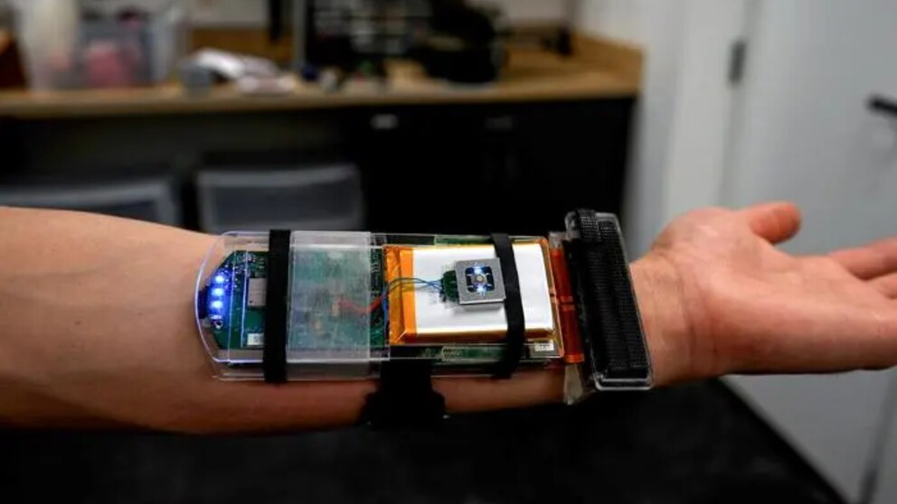
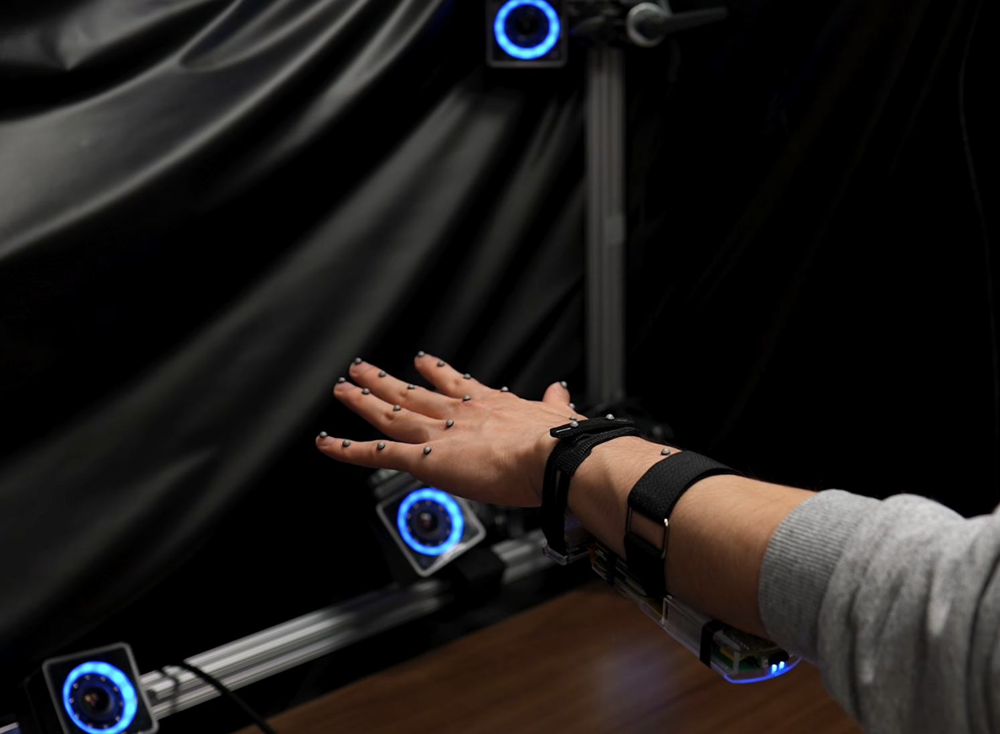
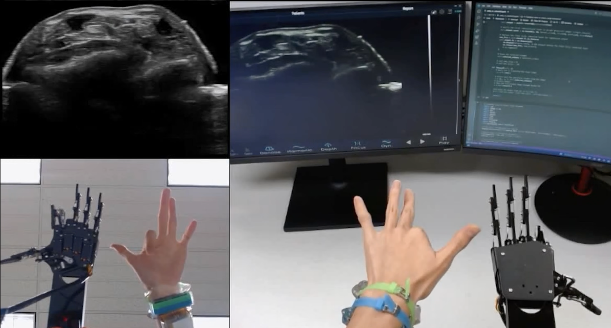
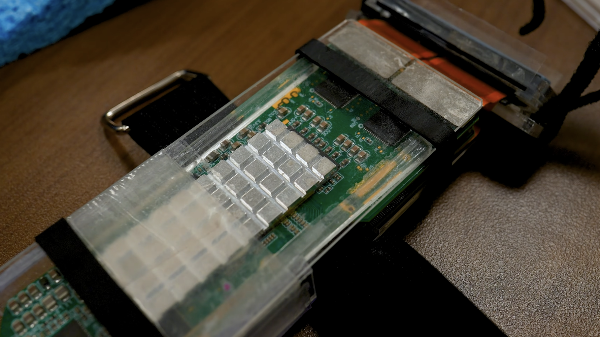
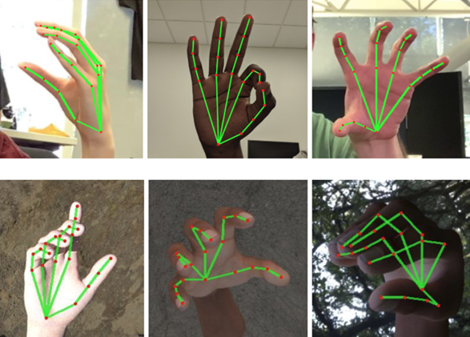
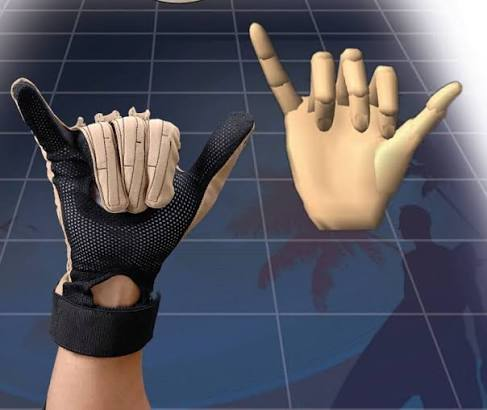
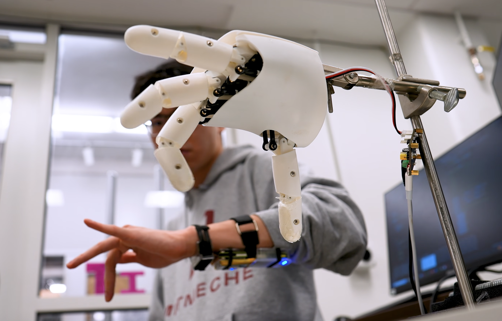

Interacción gestual
Permite manipular objetos virtuales con movimientos de pellizco y agarre, sin tocar directamente la pantalla.
Los movimientos de tu mano, convertidos en interacción digital o robótica.
Desarrollada por ingenieros del MIT, esta pulsera obtiene imágenes de ultrasonido de la muñeca. Un algoritmo de IA las interpreta para seguir los movimientos de los dedos y transmitirlos a una mano robótica o a un entorno virtual.

He elegido este prototipo porque explora una forma distinta de interactuar con ordenadores y robots: la pulsera interpreta los movimientos de la mano a partir de imágenes de ultrasonido tomadas desde la muñeca.
La pulsera convierte gestos de los dedos en órdenes digitales. En una demostración, el movimiento de pellizcar permitió ampliar o reducir un objeto en pantalla.
El MIT publicó el prototipo y el estudio científico el 25 de marzo de 2026. Es una investigación experimental, y su desarrollo marcará su comercialización.
Permite manipular objetos virtuales con movimientos de pellizco y agarre, sin tocar directamente la pantalla.
Los movimientos de la persona pueden transmitirse en tiempo real a una mano robótica para imitar acciones como tocar notas en un piano.
Al usarse desde la muñeca, el diseño evita cubrir los dedos con un guante instrumentado. Es una ventaja potencial del prototipo.
El MIT ha demostrado el seguimiento de gestos para manipular objetos virtuales y controlar una mano robótica. He recogido posibles usos futuros que podrían investigarse.
En el futuro, el seguimiento de los movimientos residuales de la muñeca podría servir como entrada para una prótesis de mano robótica. Podría investigarse para personas con amputación o ausencia de una mano.
Una persona podría mover una mano robótica a distancia imitando sus propios gestos. El MIT ya mostró una demostración de este principio. En el futuro podría estudiarse para manipular objetos en lugares peligrosos o de difícil acceso.
El equipo del MIT plantea que los datos de movimientos manuales podrían ayudar a entrenar robots humanoides en tareas de destreza, incluidos procedimientos quirúrgicos. Es una aplicación futura propuesta por los investigadores, no una herramienta médica disponible a día de hoy.
La pulsera podría permitir agarrar y manipular objetos digitales con gestos naturales. El equipo del MIT señala estos entornos como posibles aplicaciones y comprobó la posibilidad de ampliar, reducir y mover objetos virtuales en una pantalla mediante la pulsera.
Nota: salvo las demostraciones de control de una mano robótica y manipulación virtual, estos usos son proyecciones y conjeturas a las que he llegado basadas en las posibilidades descritas por el MIT. Requieren que el dispositivo siga desarrollándose y que se evalúe con usuarios.
Las imágenes y el vídeo de MIT muestran la pulsera y ejemplos de interacción. Fotografías: MIT.




Comparamos la pulsera con otros métodos de seguimiento de manos. El MIT no afirma que se puedan reemplazar por completo. Aquí se muestran sus características y limitaciones.
1975 · Método previo
Las cámaras registran visualmente los movimientos de la mano. Ejemplo: Microsoft Kinect (2010).
Limitación: pueden verse comprometidas por obstáculos visuales y requieren preparar el entorno.

1987 · Método previo
Registran los movimientos de los dedos mediante sensores incorporados en el guante. Ejemplo: CyberGlove II (2005).
Limitación: pueden restringir el movimiento natural y la sensación de la mano, dependiendo del modelo o del tamaño de la mano.

2013 · Método previo
Relacionan señales eléctricas de los músculos de la muñeca o el antebrazo con movimientos de la mano. Ejemplo: Myo (2014).
Limitación: las señales pueden tener ruido y distinguir con dificultad cambios muy sutiles.

2026 · prototipo MIT
Obtiene imágenes de músculos y tendones de la muñeca; una IA, ya entrenada, las interpreta para estimar continuamente la posición de los dedos. Los ingenieros plantean que podría complementar o sustituir algunas técnicas de seguimiento en el futuro.

Nota: El año del método indica una referencia histórica de la aparición del primer dispositivo; el ejemplo citado puede ser posterior.
Si quieres profundizar, estos son los sitios donde encontrarás más información acerca de este dispositivo:
Más información sobre la pulsera.
Muestra cómo se utiliza e información audiovisual.
Artículo de investigación sobre el seguimiento de la mano.